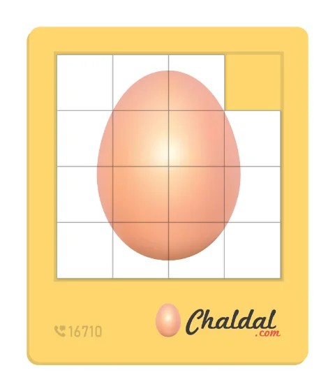
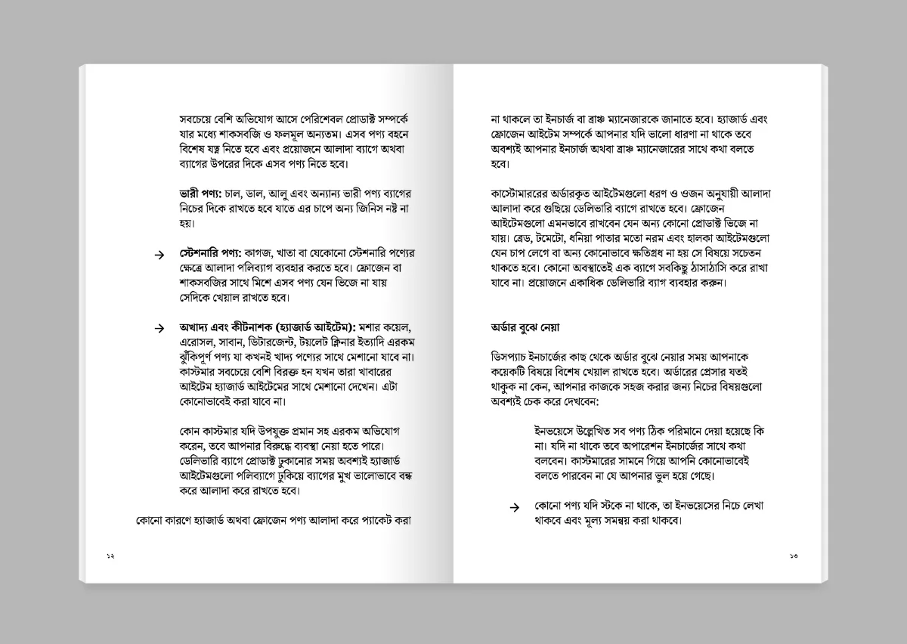
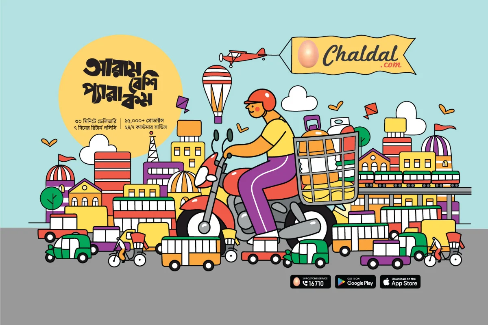
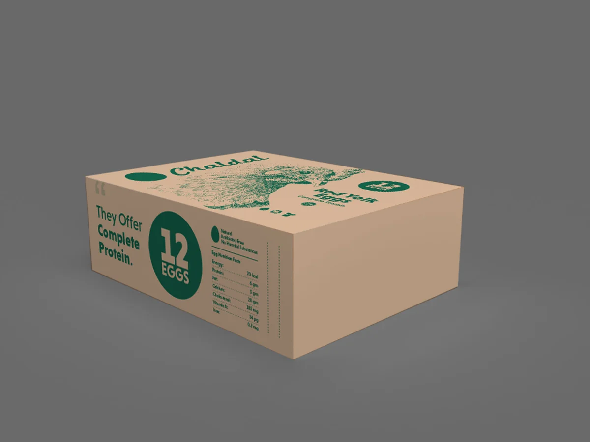

The Transition
As Head of Product, my focus had always been making the product successful, and to me that meant more than good screens. It meant making sure users actually understood what we were building for them and why it mattered, and helping the internal team build processes efficient enough to translate directly into a better customer experience. Grocery delivery in Bangladesh is not simple. Traffic, infrastructure gaps, and a lack of proper training or recognition for delivery workers all shape whether a product actually works in the real world, not just on a screen.
That thinking is what carried me into the Head of Brand and Communication role. It wasn't a departure from product thinking, it was an extension of it, aimed at the human side of the business instead of the interface.
Changing How People See a Delivery Job
While I was still Head of Product, before this role even had a name, I developed an idea that stayed with me: producing a TV drama to challenge how Bangladeshi society viewed delivery work. In our culture, being a delivery person still carries a stigma strong enough that many young people would rather stay unemployed than take the job. The drama was built to confront that mindset directly, to make being a delivery person something to be proud of, not something to hide.
It was broadcast on national TV in a prime-time slot, which meant it reached far beyond Chaldal's own customers. For delivery workers across the entire industry, not just ours, seeing their profession portrayed with dignity on national television was a massive thing.
I don't want to take too much credit for what came after. This was a starting point, not the whole story, and more dramas addressing the same stigma were produced and broadcast in the years that followed. But it became one of the clearest examples I've been part of brand work meant to change a belief, not just sell a product.
The TV drama commissioned to challenge the stigma around delivery work.
Running the Daily Brand Engine

An idea for a basic puzzle game which can be touched, hold and played
In this role, I owned all of Chaldal's daily brand communication, every campaign across online and offline channels. A full design team worked under me to produce the volume and consistency this required, day in and day out. This was less about single big moments and more about keeping a consistent voice and presence in front of customers constantly.
Managing social media day to day meant measuring engagement constantly, watching which posts, formats, and campaigns were actually landing with customers and which weren't, then adjusting the content plan accordingly. That feedback loop ran continuously, week over week.
Alongside that, the team also planned and created moments meant to last far longer than any single channel could hold, brand memories that don't always show up cleanly in a metrics dashboard, but stay with people long after the moment itself has passed.
Customer Service: Where Product Meets Reality
I also took ownership of the customer service function, leading a team handling multi-channel support. This was one of the biggest learning experiences of my career. Building a product well on screen means very little if it doesn't actually help someone in their daily life. Sitting close to customer service showed me, unfiltered, where our systems succeeded and where they quietly failed people.
A National Campaign, Told Through Story
During Chaldal's nationwide expansion, I produced a 5-episode video commercial series, working with some of the country's most prominent celebrities and a leading director. It was one of the largest brand storytelling efforts I led, built to introduce Chaldal to audiences far beyond Dhaka as the company scaled.
One of the 5 episodes from the national campaign.
For me, it was the first time for many things. I witnessed the production process sitting beside one of the most powerful directors of our time, and experienced the immense hard work put in for hours to make a perfect shot just for a few seconds on screen. I felt the pressure of determining the right time to launch, and the fear of the public reaction that would follow. Dealing with media planning and buying was a brand new experience for me too.
Training the People Who Carry the Brand
I designed and wrote training manuals and built an assessment process aimed at improving delivery quality directly. This wasn't abstract brand work, it was about giving delivery staff the tools and standards to do their jobs well and be recognized for it, connecting back to the same stigma the TV drama was built to address.
It was a handbook for the people who represented Chaldal in front of customers. They played a crucial role, as Chaldal believed delivering groceries was one of the toughest jobs, and how they handled the goods and interacted with customers during delivery mattered enormously.
From the beginning of 2023, Chaldal started expanding rapidly across the country, necessitating the development of a comprehensive process to train new delivery personnel. This manual served as a baseline script to prepare other resources, such as training videos.

A page from the delivery personnel training manual.
Branding on Wheels, and the Regulatory Reality Behind It
I hired external artists to design branded artwork for Chaldal's delivery vehicles. But the creative work was only half of it. Getting that branding onto vehicles on actual roads meant navigating a full regulatory approval process, a reminder that even the most visible, joyful piece of brand work still has to survive contact with bureaucracy and real-world constraints.

A Chaldal delivery vehicle, branded artwork by an external artist.
Redesigning the Physical Touchpoints
Eggs were always a flagship product for Chaldal, tied back to the meaning behind the company's name itself. I had the chance to redesign the Egg Box, along with several other packaging types used across grocery deliveries, extending the brand into something customers physically held in their hands.

An early direction for the Egg Box redesign, not the version we ultimately shipped.
The Face of the Company
Beyond individual projects, much of this role was simply communication. I regularly represented Chaldal to the press, to universities, and to research initiatives, becoming one of the public faces people associated with the company during this period.
One of the fastest-growing e-commerce platforms at the time was questioned, criticized, and later blocked by the government over unlawful and fraudulent activity.
"I was in this crucial role when the whole e-commerce industry went through a turmoil of mistrust."
Reflection
Looking back at everything on this list now gives me a strange kind of satisfaction I don't think I fully let myself feel while I was living through it. There were real chances for things to go wrong at almost every one of these points, a drama that could have missed its mark, a regulatory process that could have stalled a campaign, a customer service failure that could have gone public, a brand risk in putting myself forward as the face of the company. I survived it. This wasn't an easy role for someone like me, and it's only now, writing it down, that I understand how much I actually carried.